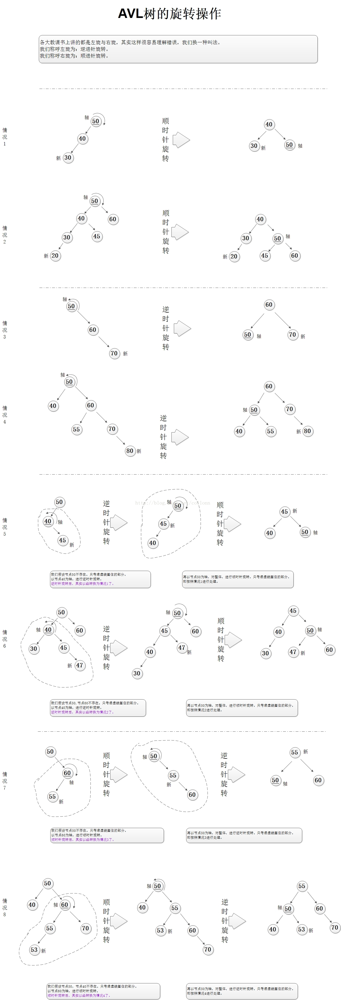

An AVL tree is a self-balancing binary search tree, and it was the first such data structure to be invented.
AVL
The AVL tree is named after its two Soviet inventors, Georgy
Adelson-Velsky and EvgeniiLandis, who published it in their 1962 paper “An algorithm for the organization of information“.An AVL tree is a
self-balancing binary search tree, and it was thefirstsuch data structure to be invented.
In an AVL tree, the heights of the two child subtrees of any node differ by at most one.
AVL trees are often compared with red-black trees because they support the same set of operations and becausered-black treesalso takeO(log n)time for the basic operations. Because AVL trees are morerigidly balanced, they arefaster than red-black trees for lookup intensive applications.
However,red-black trees are faster for insertion and removal.
AVL Tree的性质
- 任意一个结点的key，比它的lesserChild的key大，比它的greaterChild的key小；
- 任意结点的孩子结点之间高度差距最大为1；
平衡检测
对于一棵树来说，它的高度(height)定义如下：
从根节点(root)开始到某一个叶子节点(leaf)的最长路径(path)上结点的个数
根据AVL树的定义，我们可以为所有的结点定义一个平衡因子(balanced factor)：
某个结点的平衡因子等于该节点的greaterHeight的高度减去lesserHeight的高度
根据平衡树的定义，计算得到的平衡因为会出现两种情况：
- 如果平衡因子是
0, 1, -1这三个数的话，可以认定该节点是符合平衡树的定义的； - 否则，该结点不平衡，需要重新平衡；
对于一个BST来说，每次插入的元素只可能放在叶子结点上。所以只能影响某个子树是否平衡，对其他子树不会有任何的影响。
在这种情况下，我们只需要根据搜索的路径，从孩子往祖先找，如果有不平衡的结点就可以被找到。如果一直到根结点都没有发现不平衡结点，则可以认为这次的插入操作没有造成树的不平衡。
AVL保持平衡操作
如果发现了某个不平衡的结点，那么就需要对该结点进行重平衡。实现重平衡的方法，是对该节点的子树进行旋转(rotation)。
旋转有两种情况，如下图所示：
- 一种称为左旋转(关于X结点的左旋转);
- 一种称为右旋转(关于Y结点的右旋转);
AVL树的旋转实际可以用4种情况表达：LL,RR,LR,RL。LL型时单向右旋，RR时单向左旋；LR,RL时双向旋转（先左后右、先右后左)。

AVL的结构
AVL树节点-父类1
2
3
4
5
6
7
8
9
10protected static class Node<T extends Comparable<T>> {
protected T id = null;
protected Node<T> parent = null;
protected Node<T> lesser = null;
protected Node<T> greater = null;
protected Node(Node<T> parent, T id) {
this.parent = parent;
this.id = id;
}
}
AVL树节点1
2
3
4
5
6
7
8
9
10
11
12
13
14
15
16
17
18
19
20
21
22
23
24
25
26
27
28
29
30
31
32
33
34
35
36
37
38
39
40
41
42
43
44
45
46
47
48
49protected static class AVLNode<T extends Comparable<T>> extends Node<T> {
protected int height = 1;
protected AVLNode(Node<T> parent, T value) {
super(parent, value);
}
//是否叶子节点
protected boolean isLeaf() {
return ((lesser == null) && (greater == null));
}
//更新节点height
protected int updateHeight() {
int lesserHeight = 0;
if (lesser != null) {
AVLNode<T> lesserAVLNode = (AVLNode<T>) lesser;
lesserHeight = lesserAVLNode.height;
}
int greaterHeight = 0;
if (greater != null) {
AVLNode<T> greaterAVLNode = (AVLNode<T>) greater;
greaterHeight = greaterAVLNode.height;
}
if (lesserHeight > greaterHeight) {
height = lesserHeight + 1;
} else {
height = greaterHeight + 1;
}
return height;
}
/**
*获取节点平衡因子
*
* @return 左孩子比有孩子长时，平衡因子小于0
*/
protected int getBalanceFactor() {
int lesserHeight = 0;
if (lesser != null) {
AVLNode<T> lesserAVLNode = (AVLNode<T>) lesser;
lesserHeight = lesserAVLNode.height;
}
int greaterHeight = 0;
if (greater != null) {
AVLNode<T> greaterAVLNode = (AVLNode<T>) greater;
greaterHeight = greaterAVLNode.height;
}
return greaterHeight - lesserHeight;
}
}
AVL树的增删改查
新增节点
1 | protected Node<T> addValue(T id) { |
AVL树平衡
1 | /** |
旋转类型
1 | private enum Balance { |
左旋
1 |
|
右旋
1 |
|
删除节点
1 |
|
更新节点
性能
时间复杂度：O(log(n))
空间复杂度：O(n)
应用场景
AVL是一种高度平衡的二叉树，所以通常的结果是，维护这种高度平衡所付出的代价比从中获得的效率收益还大，故而实际的应用不多，更多的地方是用追求局部而不是非常严格整体平衡的红黑树。
当然，如果场景中对插入删除不频繁，只是对查找特别有要求，AVL还是优于红黑的。